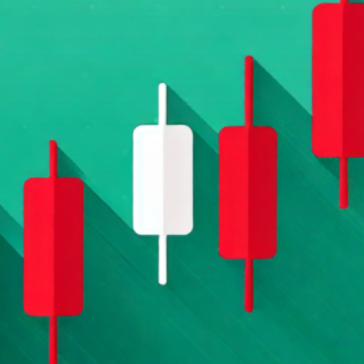

Design system · Brand
StockFlip
Nordisk Precision — a quiet instrument panel for stock and crypto alerts. Calm surfaces, precise numbers, Swedish copy voice.
Nordisk Precision
Du bevakar tickerna. Vi berättar när något händer.
Sju larmtyper, marknadsklocka i bakgrunden, och inga aviseringar när börsen är stängd. Byggt för en användare, stämt för tusen.
App mark
Launcher icon and its roundels. Pine-teal ground with a stylized chart glyph.

Play Store · 512
Adaptive · xxxhdpi

Round · on surface
Voice — do & don't
Do — Swedish, literal, calm
- “Prismål 145,00 SEK” · names the metric
- “Utlöst idag 14:32” · time-stamped, no hype
- “Tryck + för att bevaka en aktie” · second-person "du"
- “Kunde inte uppdatera bevakning” · states the fact
Don't — English, exclamatory, vague
- “🎉 Price target hit!” · wrong language, marketing tone
- “Something exciting happened!” · no metric, exclaimed
- “Tap here to add!” · exclamation, vague verb
- “Oops! We had a problem 🙁” · apology + emoji